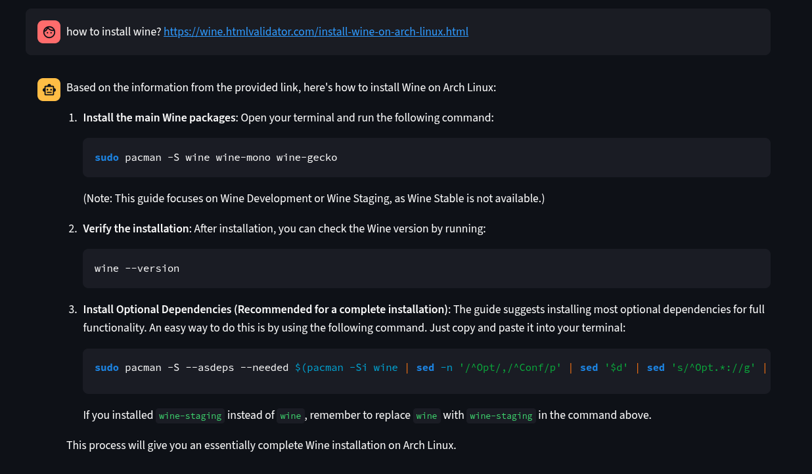

Featured Projects

IntelliTube
A RAG-based System that can summarize and answer any questions from any given YouTube Video, Documents or even Website links.
Banglish to Bangla Translator AI Model
Fine-tuned mBART multilingual model to transliterate Banglish (Romanized Bengali) into pure Bengali text. Designed for low-resource environments, trained briefly on Google Colab using PyTorch.
WebSummarizerTool
A Local LLM powered System that can generate search queries based on user-query, search websites and respond with necessary information to the user.
Image to ASCII Art Converter
A Python desktop Application with fancy UI designed to convert any image into ASCII character art - usable in text-only environments!

VSCode Window Style Customization Extension
A minimal VS Code extension that applies blur and transparency effects to the editor window on KDE Plasma and other Linux environments.
SMSTrackerBot
An LLM powered real-time telegram bot designed to retrieve transaction information from telegram group messages and save them in Google Sheets.
DriftAI
An LLM powered Open Source AI assistant designed to speed up day-to-day tasks of a PC user.
XpressionSolver
A python-based step-by-step mathematical expression evaluator.
Smart Attendance System
A fully automated IoT based attendance system.
AIFalcon
An AI system trained from scratch usnig tensorflow, keras and bag-of-words concept to answer some simple questions and take actions (for desktop users).